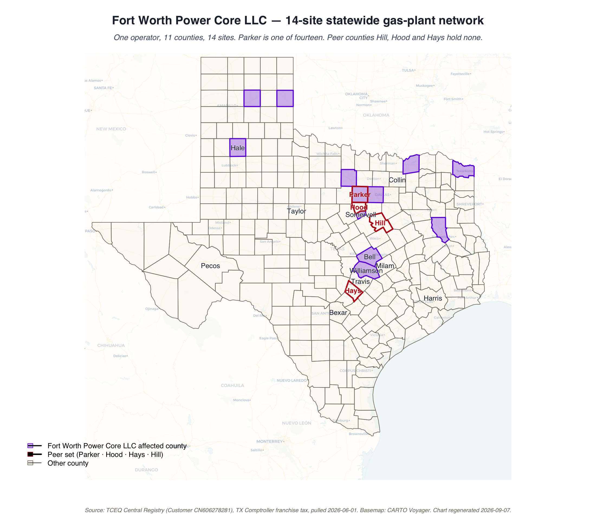
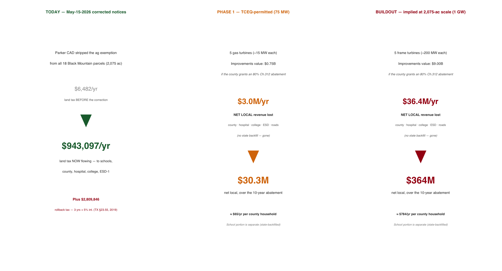
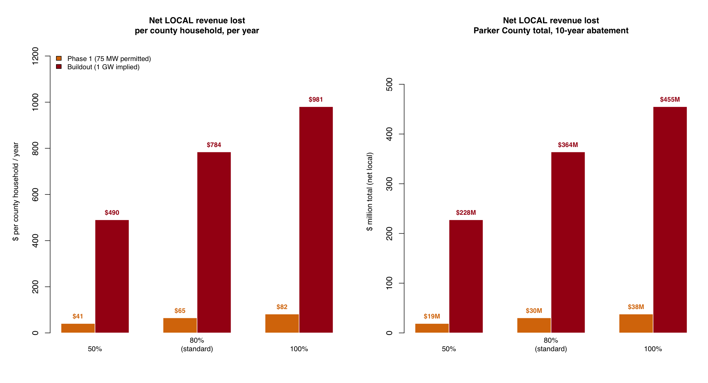
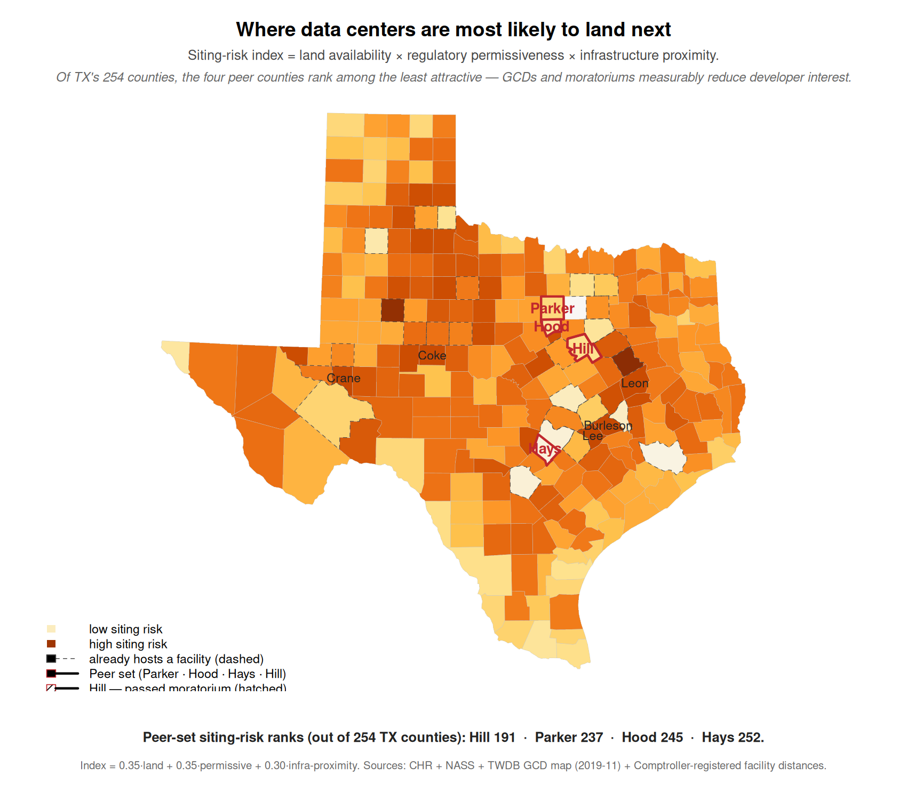

Black Mountain Power LLC
and what it will cost Parker County
A data-center and gas-plant complex at FM 730 and Pearson Ranch Road — what we know, what it will cost, and what this court can do.
Parker County Commissioners Court · June 9, 2026 · 9:00 AM
Standalone data-center session
Every number in this briefing traces to a public record. Sources are listed in each section and gathered in
Sources & methodology.
Interactive map and full data:
github.com/Parker-Data-Pro-Populo/data-center-surface-datarun
Community opposition to the establishment of data centers in Parker County shouldn’t be dismissed as uninformed ‘NIMBY-ism.’ Because we choose to stand against them isn’t a rejection of data centers, but of process and impact — something is being imposed on the community that will directly compete with us for resources necessary for our survival, such as water and clean air. To have that imposition occur when we do not have a seat at the table — when monied interests and property rights are given a seat, but the citizens and human rights are checked at the door — is simply not acceptable.
It is possible that, when all the financial and environmental concerns are addressed and there is evidence of adherence to a plan that protects the citizens and the environment of Parker County, data centers will simply be a part of the landscape. But if the process is open and inclusive, we not only have built-in protections for our community, we have built a collaborative effort across the county, focused on the common good. This is a habit we must continue, because this will not be the last challenge our community will face.
The appraisal district just recognized the conversion
Parker County Appraisal District, May 15, 2026
On May 15 the appraisal district stripped the agricultural exemption from all 18 parcels at 501 Pearson Ranch Road. In plain terms: the county now officially treats this land as an industrial site, not a ranch — because that is what it is becoming.
The CAD issued corrected notices on all 18 parcels owned by Black Mountain Power LLC at 501 Pearson Ranch Road.
The notices removed the agricultural exemption. The parcels are no longer being valued as ranchland, because they are no longer being used as ranchland.
This is the appraisal district officially recognizing that the conversion has begun.
Source: Parker CAD May-15-2026 corrected notices. See Sources & methodology.
2,075 acres, just outside the city's reach
501 Pearson Ranch Road, off FM 730 (Azle Highway)
The site was deliberately pulled out of Weatherford's jurisdiction and sits on top of the city's drinking-water watershed — so the people most affected have the least say over it.
- 18 parcels · 2,075.28 acres assembled under Black Mountain Power LLC
- Taxing units: Weatherford ISD, Parker County, Hospital District, Junior College District, ESD-1, Lateral Road
- Removed from Weatherford's ETJ — petitioned out, so the city has no land-use authority
- Inside the Lake Weatherford watershed — the city's drinking-water source
- ~2 miles from the northern City of Willow Park boundary
- ~1 mile from a proposed $1.5 billion equine development the city has been planning for four years
Land value
Earlier transactions
2025–2026: further parcels assembled under the same operator
2026-05-15: ag exemption stripped from all 18 parcels
Sources: Parker CAD · pg01.parker_property · Weatherford City Manager testimony, May 26, 2026.
One operator, multiple LLCs, one office
And a documented trail of political giving alongside a 2.5-week permit
The same person controls every entity involved — a land company that holds the dirt and a power company that holds the air permits — all run out of a single Fort Worth office. Six months before the permit cleared in 2.5 weeks, that company gave the Governor's campaign half a million dollars.
Rhett M. Bennett is the registered agent for every Black Mountain entity and a named member of Fort Worth Power Core LLC. All four entities operate from 425 Houston Street, Suite 400, Fort Worth, TX 76102.
The structure separates the land arm from the power arm. The land arm holds the parcels. The power arm holds the TCEQ air permits and operates the gas turbines.
| Entity | TX SOS file | Formed |
|---|---|---|
| Black Mountain Land Company LP | 0801708440 | 2012-12-28 |
| Black Mountain Royalty LP | — | (earlier) |
| Black Mountain Power LLC land arm | 0805989692 | 2025-04-11 |
| Fort Worth Power Core LLC power arm | 0805493020 | 2024-04-03 |
Registered agent for all entities: Rhett M. Bennett. Registered agent for the power-arm legal filings: Stubbeman McRae Sealy Laughlin & Browder (Midland TX, Permian Basin energy counsel).
Nov 14, 2025 · Texas Ethics Commission Report #101029815
$46,000 — Rhett Bennett → eight Fort Worth City Council members & the Mayor
2025, during zoning approvals
Nov 14, 2025 donation → permit approved May 2026.
The sequence is a matter of public record. The conclusion is yours to draw.
Sources: TX Comptroller franchise-tax registry · TCEQ Central Registry · Texas Ethics Commission Report #101029815 · Texas Tribune (Jan 15, 2026) · Fort Worth Report. See Sources & methodology.
Parker is one site in a statewide rollout
Fort Worth Power Core LLC · 14 sites · ~5,800 MW · 26 months · one address
This isn't a one-off local project. The same operator has registered 14 gas plants across Texas in just over two years. Four are tied to data centers; the other ten are registered as merchant grid generation, not tied to a specific data center. Parker drew the developer's attention as the Fort Worth campus ran into resistance.

Powering the $10B Black Mountain campus, SE Fort Worth
Parker County ×1 — 75 MW
"Backup/bridge power for a new data center" (TCEQ permit language)
Hale · Jack · Somervell · Wheeler · Williamson
Selling wholesale power to ERCOT — not tied to a specific data center
↗ Open the interactive map — toggle the "Fort Worth Power Core network" layer.
Tarrant permits filed. $10B Fort Worth campus planned.
$46K to FW City Council. $500K to Abbott (Nov).
"Resources & land use concerns" — campus stalled.
Rural. No recorded local contributions. 2.5-week permit. (FW vote still pending: Jun 23)
Sources: TCEQ Central Registry CN606278281 · TCEQ turbine permit database · GEM Wiki · ERCOT interconnection queue · Fort Worth Report.
A power plant approved in 2.5 weeks, with no public process
75 megawatts · 5 gas turbines · 24/7 continuous operation
Texas has a slow permit path with public hearings, and a fast path with none. This plant took the fast path — approved in two and a half weeks, with no chance for anyone to comment or object.
| TCEQ regulated entity | RN112172408 "PARKER PLANT" |
| Permit number | Air New Source Registration #179422 |
| Permit type | Standard Permit / Permit-by-Rule fast-track |
| Status | ACTIVE |
| Holder | Fort Worth Power Core LLC |
| Approval timeline | 2.5 weeks (vs ~9 months for the City of Weatherford's recent wastewater permit) |
| Public-notice process | None |
| Operating hours | Continuous (24/7) |
What "Standard Permit" means
TCEQ has two air-permit paths:
- New Source Review (NSR): full technical analysis, 30-day public notice, contested-case hearing available. Takes 6–18 months.
- Standard Permit / Permit-by-Rule: pre-approved authorization templates. Minimal or no public notice. Takes days to weeks.
The fast-track is legal. But it means the public did not have the opportunity to comment, request a contested-case hearing, or examine the emissions inventory.
Sources: TCEQ Central Registry · May-26-2026 commissioners court transcript.
Phase 1: about $30 million the county simply never collects
If the county grants an 80% Chapter 312 abatement on what's already permitted
A Chapter 312 abatement excuses the company from county and special-district taxes on most of its value — so that money is never collected. Unlike the school-district portion, none of it is replaced by the state: it is revenue for county roads, the sheriff, EMS, the hospital district, and the junior college that simply never arrives.

Phase 1 is the 75-MW gas plant plus accompanying data-center capacity TCEQ has already permitted.
If Parker County and its special districts grant the standard 80% Chapter 312 abatement, the net local loss — with no state backfill — is:
The school district's share is separate. Weatherford ISD can't grant a Chapter 312 abatement; its piece is a state-program (Chapter 313/JETI) matter and is largely backfilled by the state — so it is not a local loss, and not this court's decision. We don't count it here.
Net local = county + hospital + junior college + ESD + lateral-road foregone revenue (Chapter 312, no state backfill). Model: parker_costs/RCO_05f_local_net.R. See Sources & methodology.
Buildout: about $364 million in local revenue, gone
What the 2,075-acre footprint actually supports
The 75 MW is just the start — the City Manager testified it "would not be enough." The land can hold a campus more than ten times that size. At full buildout, the county and its special districts would give up roughly $364 million over ten years — about $784 per county household per year — with no state backfill, and, as the next panel shows, no jobs or product to show for it.

2,075 acres can host a 1-gigawatt campus comfortably. At 1 GW with an 80% Chapter 312 abatement, the net local loss is:
The school-district share (separate, state-backfilled) is not counted here. Counting only what the county controls and the state does not replace, this is the real local number.
Net local = county + special-district foregone revenue (Chapter 312, no state backfill). Capex assumption: $8M/MW · 85% taxable · 10-yr term. Job floors: TX Tax Code §151.359 / JETI (Gov't Code Ch. 403). Model: parker_costs/RCO_05f_local_net.R.
And the county can't simply tax its way back
HB 3 and SB 2 cap how fast local government can raise revenue
It's natural to assume the county could recover this over time by adjusting rates. State law sharply limits that. An abatement isn't a gap that closes later — it's a lasting reduction in what the county can fund, even as the project adds new demands to the same budget.
Two laws the Texas Legislature passed in 2019 cap how fast local jurisdictions can raise revenue without sending it to an election:
- HB 3 — limits Weatherford ISD revenue growth without a voter-approval election
- SB 2 — caps county and special-district revenue growth at 3.5% without a voter-approval election
Because of these caps, the county cannot raise its rate enough to recover revenue of this magnitude. In practical terms the abated amount is permanent — it does not return as a higher bill on other residents, and it cannot be recouped later.
Two things are true at once
The county cannot recover the foregone revenue by raising rates — state law caps how fast revenue can grow.
The project still adds real costs to the existing budget — emergency response for an industrial site, road wear, water-system load, the demands of growth — while only one-fifth of its value is taxed to offset them.
The gap between what the project costs the county and what it pays falls on the budget everyone already funds. The specific cost categories and dollar figures are being compiled.
Statutory anchors: TX HB 3 (2019, school finance) · TX SB 2 (2019, property-tax reform). Service-cost figures forthcoming.
The site choice tells the developer's story
Cheap rural land, light regulation, close to existing infrastructure
Developers pick sites by a simple formula: available land, light regulation, and nearness to power lines. Parker's own rules already make it a hard target — but the region's infrastructure was attractive enough that the company decided the local fight was worth it.

The siting-risk index combines:
- Available rural land (low cropland share)
- Regulatory permissiveness (GCD, PGMA, moratorium status)
- Proximity to existing data-center / grid infrastructure
Parker's current rank: 237 of 254 Texas counties.
Our regulations and Hill's moratorium have measurably lowered Parker's score. But the regional clustering still made us attractive. The developer's calculation was: worth the local political fight here, versus siting somewhere with less infrastructure.
Hill County (after passing the moratorium): rank 191. Hood: rank 245. Hays: rank 252. Without the regulations, Parker would be near the top quartile.
Index: 0.35·land + 0.35·permissive + 0.30·infrastructure-proximity. See Sources & methodology.
Other Texas counties are already fighting this — and paying for it
And what happened to them is a guide to what works
Parker isn't first. Neighboring counties tried to slow these projects down — and the state and the developers pushed back hard. Their experience points to where the county actually has power: not land use, but the tax-abatement vote.
Hood County, TX
Considered a data-center moratorium in early 2026.
State Senator Paul Bettencourt sent a letter to the Texas Attorney General — explicitly in response to Hood's consideration — alleging counties have no statutory authority. Hood subsequently denied a plat on local planning grounds. Now in litigation.
Fort Worth Power Core has not pursued Hood, but has a site one county west in Somervell (Glen Rose).
Hill County, TX
Went further than Hood: actually passed the moratorium. Hired outside counsel.
Faces the same legal posture from the State — threatened litigation under the Bettencourt position. Also facing litigation from the data-center developer directly.
Other moratoriums (May 2026)
City of Harlingen, TX (May 25, 2026)
Tulsa OK · Denver CO
"Several places
in California, Ohio, Wisconsin, North Carolina"
— Sid Miller, TX Ag Commissioner, May 26 testimony
The pattern is national: cities and counties moving to pause or block data-center siting while state regulations catch up. Texas is at the front edge because of AI buildout pressure.
The key legal fact: Texas counties operate under the Dillon Rule — limited statutory authority, no home-rule. The county cannot regulate land use directly. But the court has full statutory authority over tax-abatement decisions.
Sources: May-26-2026 commissioners court transcript · Sid Miller testimony · public moratorium records.
The court can't block it — but it controls the money
Real authority, within Dillon Rule limits
The county can't stop construction or override the state. But it doesn't have to hand over a tax break — and that decision is entirely the court's to make. That's the lever.
What the court CAN do
- Refuse a Chapter 312 abatement — fully within the court's authority
- Refuse a Chapter 381 agreement — same
- Adopt a formal policy declining incentives for data-center projects above a threshold size or absent specified conditions
- Direct the EDC to decline data-center incentive task forces
- Issue a non-binding resolution articulating the court's policy
- File TPIA requests for the TCEQ permit file
- Coordinate with the 13 other counties Fort Worth Power Core has sited in
What the court CANNOT do
- Block Black Mountain from building on private land (Dillon Rule)
- Override TCEQ permitting
- Override ERCOT interconnection
- Pass an enforceable land-use moratorium (Hill County is finding out the legal cost)
- Set city zoning rules (only cities can; data centers are not a permitted use in any Weatherford zoning district, and the city declined to add them)
The political lever for residents is the abatement vote. That vote is fully discretionary. Black Mountain has not yet filed for an abatement — but they will. The window to set policy is now.
Texas Tax Code Chapters 312 and 381 · Texas Constitution Article XI (county powers).
Six specific actions for the June 9 session
None require new authority — all are within the court's existing powers
Here is the concrete request. Each item is something this court can do on its own, today, without waiting for the state or a new law.
None of these asks require new statutory authority. All are within the court's existing powers.
Don't take my word for it — check the map
Every county, every layer, every source
All of this is built on public data you can examine yourself. The interactive map lets you click any Texas county and see the numbers behind it.
- Toggle the RCO surface — where data-center resource competition is most intense in Texas
- Toggle the MW concentration — where the operating fleet sits today
- Toggle the Fort Worth Power Core network — the 14-site rollout
- Toggle GCD coverage — where groundwater regulation exists
- Click any county for source-cited detail
A single self-contained HTML file. Works offline. Share it.
What it answers
- How does Parker compare to Hill, Hood, Hays?
- Where is the rest of the Fort Worth Power Core network?
- Which counties have GCDs and which don't?
- How much operating capacity does each county already have?
All source data on GitHub:
github.com/Parker-Data-Pro-Populo/data-center-surface-datarun
Map built with Leaflet + CARTO Voyager basemap.
Every number traces to a public record
If a source is wrong or the math is off, it gets corrected with a dated note
Data sources
- Parker County Appraisal District — May-15-2026 corrected notices (18 parcels)
- pg01.parker_property — Parker CAD certified roll, tax rates, parcel ownership
- TCEQ Central Registry — Regulated Entity + Customer search, pulled 2026-06-01
- TX Comptroller franchise-tax registry — pulled 2026-06-01
- TX Comptroller Chapter 312 / JETI registries — pulled 2026-06-01 (Black Mountain: no filings)
- TWDB Nov-2019 GCD shapefile — 101 districts, 254 counties, spatial join
- USDA NASS Census of Agriculture 2022 — cropland share
- TX Comptroller Registered Qualifying Data Centers — operating fleet
- Parker County Commissioners Court — May-26-2026 session transcript
- Texas Ethics Commission — Report #101029815 ($500K Abbott contribution); confirmed by Texas Tribune (Jan 15, 2026)
- Fort Worth Report / KERA News — political-contribution records; $10B FW campus stall; Fort Worth City Council Jun 23 vote
- TCEQ turbine permit database (turbine-lst.xlsx) — all 14 FWPC permit numbers, dates, and MW ratings
- GEM Wiki / ERCOT interconnection queue — site-level capacity and grid-connection status for Tier B sites
Methodology
The cost model takes the taxable improvements (data-center capex + gas turbines at $8M/MW · 85% taxable share) and applies an 80% Chapter 312 abatement rate. It reports the net local loss — the foregone revenue of the county, hospital district, junior college, ESD, and lateral road, which have no state backfill — and divides by Parker County households (46,404). The Weatherford ISD share is deliberately excluded: school districts cannot grant Chapter 312 abatements, and a school-district value limitation (Chapter 313 / JETI) is largely replaced by state funds under the Foundation School Program, so it is a state cost, not a net local loss (TEA; Texas Comptroller; Tax Code §312.002).
HB 3 and SB 2 cap how fast a taxing unit can raise revenue, so the foregone amount cannot be recovered by raising rates later — it is treated as a permanent reduction in local fiscal capacity, not as a per-resident charge. The separate question of the costs the project imposes on the existing budget is being quantified and is not included in the figures above.
The siting-risk index is a weighted composite: 0.35·land + 0.35·permissive + 0.30·infrastructure proximity, normalized to [0,1] across 254 counties.
Full code, data, and reproducibility:
github.com/Parker-Data-Pro-Populo/data-center-surface-datarun
Henry Lee Butler · prepared for the June 9, 2026 Parker County Commissioners Court session.
Questions — and how to help
If you have questions, dispute a number, or want a deeper dive on the methodology, raise your hand.
Every figure has a source. If a source is wrong, I want to know. If the math is wrong, I want to know.
For follow-up:
Henry Lee Butler
henry.lee@henrylee.vote
github.com/Parker-Data-Pro-Populo/data-center-surface-datarun
What you can do
senate.texas.gov/member.php?d=10Sen. Brent Hagenbach · TX Senate District 30 ·
senate.texas.gov/member.php?d=30Rep. Mike Olcott · TX House District 60 · 212 Santa Fe Dr., Weatherford ·
house.texas.gov/members/member-page/?district=60
Thank you. Black Mountain · Parker County · June 9, 2026.